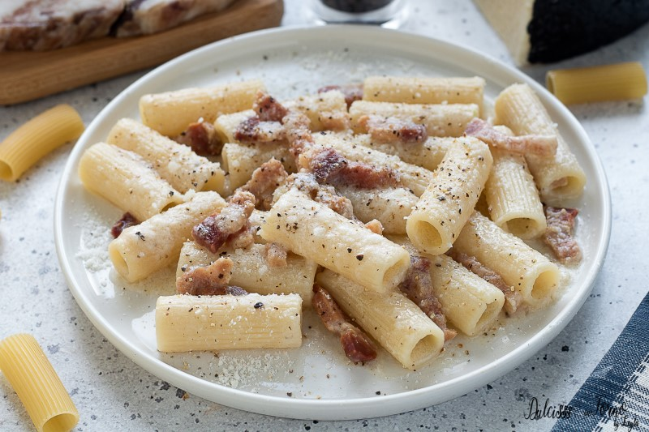

ULTIME RICETTE

Coda alla vaccinara
Some quick example text to build on the card title and make up the bulk of the card's content.

Carciofi alla romana
Some quick example text to build on the card title and make up the bulk of the card's content.

Spaghetti all'amatriciana
Some quick example text to build on the card title and make up the bulk of the card's content.



F.A.Q.
Nata nel cuore di Roma, più precisamente nel rione Regola, dove abitavano i vaccinari, la coda alla vaccinara è considerata la "regina" del quinto quarto, ovvero quel che rimane della bestia vaccina dopo che sono state vendute ai benestanti le parti pregiate.
No. I nostri corsi sono gratuiti e gli studenti sono liberi di effettuare donazioni volontarie per sostenere le spese tecniche di Er Carbonaro.
Il Lazio conta più 30 tipologie di vino, tra cui 27 d'origine controllata. Puoi leggere la lista completa qui.